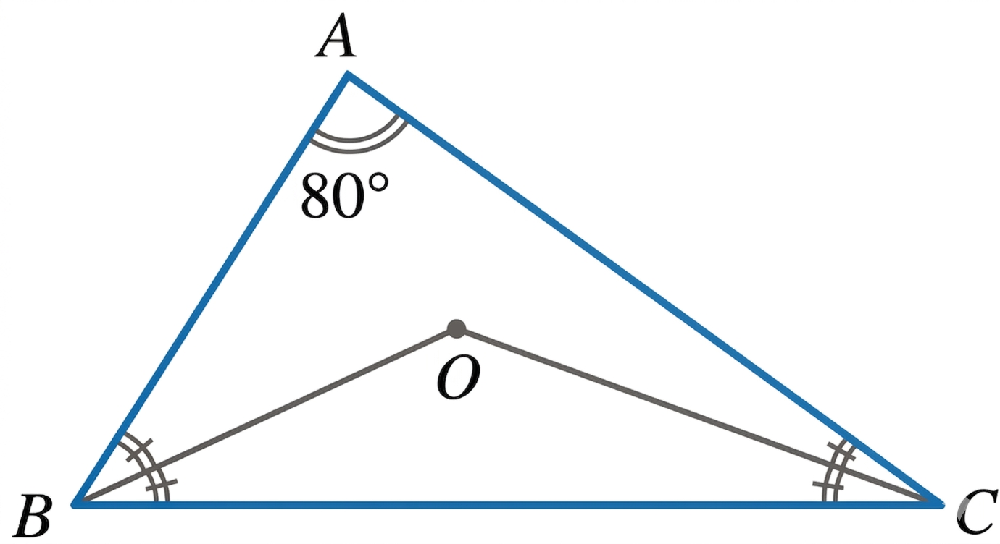

In triangle ABC, the internal bisectors of ∠B and ∠C meet at a point O. If the measure of ∠A is 80°, what is the measure of ∠BOC?

In triangle ABC, the internal bisectors of ∠B and ∠C meet at a point O. If the measure of ∠A is 80°, what is the measure of ∠BOC?

<think>
Okay, let's see. I need to find the measure of angle BOC in triangle ABC where O is the intersection point of the internal bisectors of angles B and C. Angle A is given as 80 degrees. Hmm, right. So first, maybe I should recall some properties about angle bisectors and triangles.
Wait, triangle ABC has angle A = 80°, so the sum of angles in a triangle is 180°, so angles at B and C together must be 180° - 80° = 100°. So angle B + angle C = 100°. Now, since BO and CO are the angle bisectors, each bisects their respective angles. So angle OBC would be half of angle B, and angle OCB would be half of angle C.
Let me write that down. Let’s denote angle ABC as ∠B, so ∠OBC = (1/2)∠B. Similarly, ∠ACB = ∠C, so ∠OCB = (1/2)∠C. Then, in triangle BOC, the angles at B and C are these halves. Wait, but angle at O in triangle BOC is what we need to find, which is ∠BOC.
In any triangle, the sum of angles is 180°, so in triangle BOC: ∠BOC + ∠OBC + ∠OCB = 180°. So substituting the bisected angles: ∠BOC + (1/2)∠B + (1/2)∠C = 180°. But we know that ∠B + ∠C = 100°, so (1/2)(∠B + ∠C) = 50°. Therefore, ∠BOC + 50° = 180°, so ∠BOC = 130°.
Wait, is there another way to check this? Maybe using the formula for the angle formed by two angle bisectors. I remember there's a formula that in a triangle, the measure of the angle formed by the bisectors of two angles is equal to 90° plus half the measure of the third angle. Let me verify that. If angle A is 80°, then angle BOC should be 90° + (angle A)/2 = 90° + 40° = 130°. Yes, that matches. So that formula seems to work here.
So both methods give the same result. The calculation using the sum of angles in triangle BOC gives 130°, and the formula also gives 130°. So the answer should be 130 degrees. Let me just make sure I didn't mix up any steps. Angle A is 80°, so angles B and C total 100°. Bisecting them gives 50° total in the smaller triangle. So subtracting from 180° gives 130°. Yep, that seems solid. No mistakes spotted here.
</think>
<answer>
In triangle $ABC$, $\angle A = 80^\circ$. Since the sum of angles in a triangle is $180^\circ$, the remaining angles satisfy $\angle B + \angle C = 180^\circ - 80^\circ = 100^\circ$.
Point $O$ is the intersection of the internal bisectors of $\angle B$ and $\angle C$, so $\angle OBC = \frac{1}{2}\angle B$ and $\angle OCB = \frac{1}{2}\angle C$. Adding these gives:
$$
\angle OBC + \angle OCB = \frac{1}{2}(\angle B + \angle C) = \frac{1}{2}(100^\circ) = 50^\circ.
$$
In triangle $BOC$, the sum of angles is $180^\circ$, so:
$$
\angle BOC = 180^\circ - (\angle OBC + \angle OCB) = 180^\circ - 50^\circ = 130^\circ.
$$
Alternatively, the formula for the angle between two internal bisectors states $\angle BOC = 90^\circ + \frac{1}{2}\angle A$. Substituting $\angle A = 80^\circ$:
$$
\angle BOC = 90^\circ + \frac{1}{2}(80^\circ) = 90^\circ + 40^\circ = 130^\circ.
$$
Both approaches confirm the measure of $\angle BOC$.
\boxed{130}
</answer>